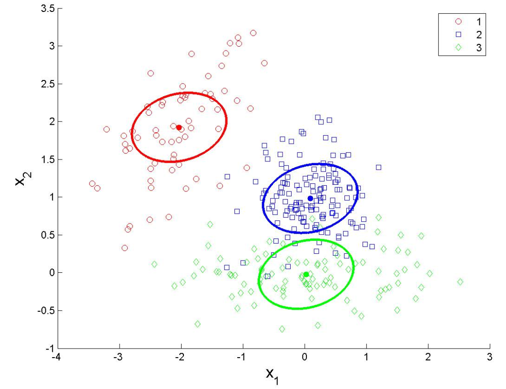
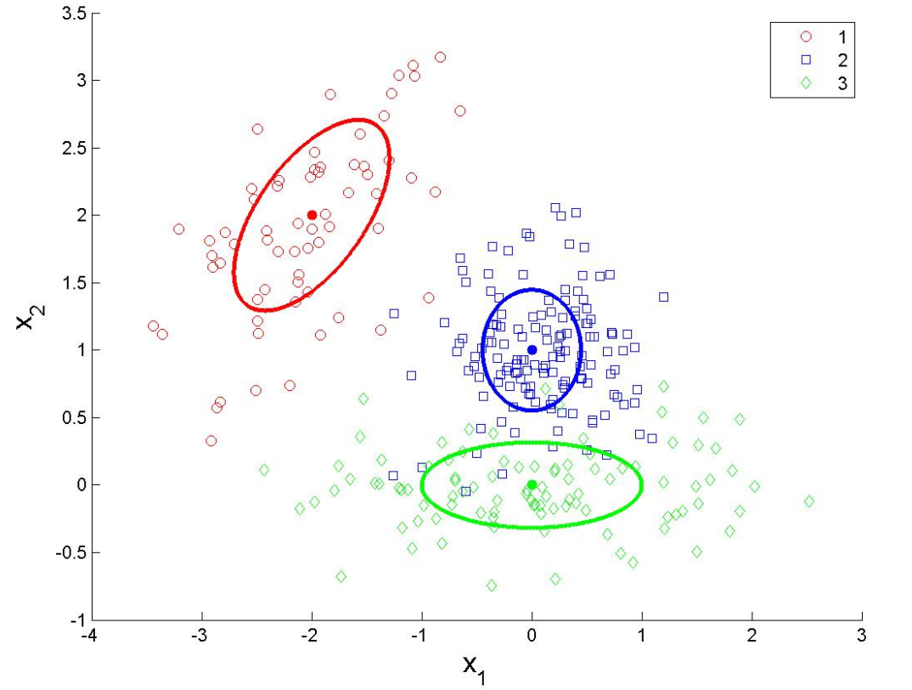
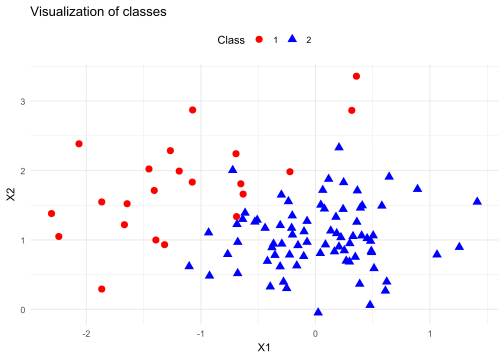
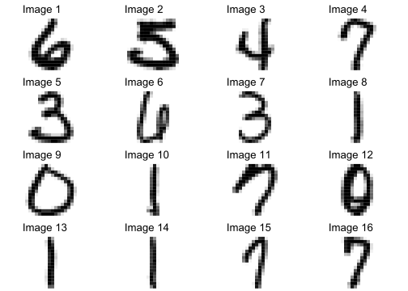

Code
library(caret)
library(MASS)
library(ggplot2)Discriminant factor analysis (DA) or simply discriminant analysis is a statistical technique that aims to:
describe
explain
predict
the membership to predefined groups (classes, modalities of the variable to be predicted…) of a set of observations (individuals, examples…) from a series of predictive variables (descriptors, exogenous variables…).
In medicine, to detect high-risk cardiac groups based on characteristics such as diet, smoking or not, family history, …
Discriminant analysis can be a descriptive technique:
Discriminant analysis can be a predictive technique:
We have a sample of \(n\) observations distributed in \(K\) groups of sizes \(n_k\). The number of classes \(K\) is fixed in advance.
\[\begin{aligned} X_n = \begin{bmatrix} x_{11} & x_{12} & x_{13} & \dots & x_{1p} \\ x_{21} & x_{22} & x_{23} & \dots & x_{2p} \\ \vdots & \vdots & \vdots & \ddots & \vdots \\ x_{n1} & x_{n2} & x_{n3} & \dots & x_{np} \end{bmatrix} \quad , \quad Y_n = \begin{bmatrix} y_{1} \\ y_{2} \\ \vdots \\ y_{n} \end{bmatrix}\\ y \in \{1,...,K\} \end{aligned}\]In discriminant analysis, we assume that the conditional distribution of X to class Y is parametric and Gaussian \((X|Y = k \sim \mathcal{N}(\mu_{K},\Sigma_{K}))\)
Where:
\(\mu_{k}\): the centers of gravity of the conditional point clouds
\(\Sigma_k\): their variance-covariance matrix
Then the probability density function (PDF) is:
\[\begin{aligned} f(x|Y=k) = \frac{1}{(2 \pi)^\frac{p}{2}|\Sigma_{k}|^{\frac{1}{2}}}exp\{ -\frac{1}{2}(x-\mu_k)^\intercal \sum\nolimits_{k}^{-1}(x-\mu_k)\} \end{aligned}\]

In training step, we want to find the classification rule \(g(x)\) that maximize the \(\mathbb{P}(Y = k | X = x)\). The Bayesian rule write as:
\[\begin{aligned} g(x) &= \mathbb{P}(Y = k | X = x) \\ &= f(x|Y=k) \mathbb{P}(Y=k)\\ &= log(f(x|Y=k)) + log(\pi_{k})\\ \end{aligned}\]Maximum likelihood estimators
\[\begin{aligned} \widehat{\pi} &= \frac{n_k}{n} & \widehat{\mu_k} = \frac{1}{n_k}\sum_{i;y_i = k }^{}x_i\\ \widehat{\Sigma_k} &= \frac{1}{n_k}\sum_{i;y_i = k }^{}(x_i-\widehat{\mu_k})^\intercal (x_i-\widehat{\mu_k})\\ \end{aligned}\]We assume that K clusters have the same \(\Sigma\), \(\Sigma_k = \Sigma\) for k = 1,··· ,K. Now the likelihood is
\[\begin{aligned} f(x|Y=k) = \frac{1}{(2 \pi)^\frac{p}{2}|\Sigma|^{\frac{1}{2}}}exp\{ -\frac{1}{2}(x-\mu_k)^\intercal \sum\nolimits_{}^{-1}(x-\mu_k)\} \end{aligned}\]take the log
\[\begin{aligned} log(f(x|Y=k)) &= \underbrace{- \frac{\pi}{2} log(2 \pi) - \frac{1}{2}log|\Sigma|} - \frac{1}{2}(x-\mu_k)^\intercal \sum\nolimits_{}^{-1}(x-\mu_k) \\ &= independent\ on\ k \\ &= - \frac{1}{2}(x-\mu_k)^\intercal \sum\nolimits_{}^{-1}(x-\mu_k) + constants \\ &= - \frac{1}{2}(x^\intercal \Sigma^{-1}x -2x^\intercal \Sigma^{-1}\mu_k+\mu^{\intercal}_k \sum\nolimits_{}^{-1}\mu_k) + constants \\ &= \underbrace{-\frac{1}{2}x^\intercal \Sigma^{-1}x} + x^\intercal \Sigma^{-1}\mu_k -\frac{1}{2} \mu^{\intercal}_k \sum\nolimits_{}^{-1}\mu_k + constants \\ &= same\ for\ all\ k \end{aligned}\]We want to maximize \(g(x) = \mathbb{P}(Y = k | X = x) = log(f(x|Y=k)) + log(\pi_{k})\). So \(L_{k}(x)= x^\intercal \Sigma^{-1}\mu_k -\frac{1}{2} \mu^{\intercal}_k \sum\nolimits_{}^{-1}\mu_k + log(\pi_{k})\) is called linear discriminant function.
The posterior probabilities of the classes are calculated as follows:
\[\begin{aligned} \mathbb{P}(Y = k | X = x) = \frac{exp(L_k(x))}{\sum_{\ell=1}^{k}exp(L_\ell(x))} \end{aligned}\]We no longer assume that K clusters have the same \(\Sigma\), \(\Sigma_k = \Sigma\) for k = 1,··· ,K. Take the log likelihood of PDF of multivariate Gaussian distribution
\[\begin{aligned} log(f(x|Y=k)) &= \underbrace{- \frac{\pi}{2} log(2 \pi)} - \frac{1}{2}log|\Sigma_k|^{-1} - \frac{1}{2}(x-\mu_k)^\intercal \sum\nolimits_{k}^{-1}(x-\mu_k) \\ &= independent\ on\ k \\ &= - \frac{1}{2}log|\Sigma_k|^{-1} - \frac{1}{2}(x-\mu_k)^\intercal \sum\nolimits_{k}^{-1}(x-\mu_k) + constants \\ \end{aligned}\]We want to maximize \(g(x) = \mathbb{P}(Y = k | X = x) = log(f(x|Y=k)) + log(\pi_{k})\). So \(L_{k}(x)= - \frac{1}{2}log|\Sigma_k|^{-1} - \frac{1}{2}(x-\mu_k)^\intercal \sum\nolimits_{k}^{-1}(x-\mu_k) + log(\pi_{k})\) is called quadratic discriminant function.
The posterior probabilities of the classes are calculated as follows:
\[\begin{aligned} \mathbb{P}(Y = k | X = x) = \frac{exp(Q_k(x))}{\sum_{\ell=1}^{k}exp(Q_\ell(x))} \end{aligned}\]LDA and QDA rely on statistical assumptions (normality of data and homogeneity of covariance matrices for LDA). These assumptions can be partially or totally violated in real datasets.
Even if LDA or QDA are considered relatively simple models, they can overfit on complex or noisy datasets.
library(caret)
library(MASS)
library(ggplot2)train <- read.table(file="./data/synth_train.txt", header=TRUE)
head(train) y x1 x2
1 2 -0.72221141 2.0044709
2 2 -0.92467912 0.4836693
3 2 -0.76602281 0.7943289
4 2 -0.07328948 0.9699291
5 1 -1.39291198 0.9996971
6 2 -0.20223339 1.3503319train$y <- factor(train$y)
train_data <- data.frame(X1 = train$x1, X2 = train$x2, Class = factor(train$y))
ggplot(train_data,
aes(x = X1, y = X2, shape = Class, color = Class)) +
geom_point(size = 3) +
scale_color_manual(values = c("red", "blue"), name = "Class") +
scale_shape_manual(values = c(16, 17), name = "Class") +
labs(title = "Visualization of classes", x = "X1", y = "X2") +
theme_minimal() +
theme(legend.position = "top")
Maximum likelihood estimators
\[ \widehat \pi_k = \frac{n_k}{n}, \qquad \widehat \mu_k = \frac{1}{n_k} \sum_{i; y_i=k} x_i,\qquad \widehat \Sigma_k=\frac{1}{n_k} \sum_{i; y_i=k}(x_i-\widehat \mu_k)^\top (x_i-\widehat \mu_k). \] We will estimate these parameters on these parameters on the training data.
n <- nrow(train_data)
# class 1
ind1 <- which(train_data$Class==1)
n1 <- length(ind1)
pi1 <- n1/n
mu1 <- colMeans(train_data[ind1,1:2])
sigma1 <- var(train_data[ind1,1:2])*(n1-1)/n1
# class 2
ind2 <- which(train_data$Class==2)
n2 <- length(ind2)
pi2 <- n2/n
mu2 <- colMeans(train_data[ind2,1:2])
sigma2 <- var(train_data[ind2,1:2])*(n2-1)/n2We had the quadratic discriminant function
\[ Q_k(x)=-\frac 12 \log |\Sigma_k|^{-1} - \frac 12 (x-\mu_k)^\top \Sigma_k^{-1}(x-\mu_k)+\log \pi_k. \]
We have the new data \(x = (-1,1)\), then we calculate \(Q_1(x)\) and \(Q_2(x)\)
x = c(-1,1)
names(x) = c("x1","x2")
Q1 <- - 1/2*log(det(sigma1))-1/2*t(x-mu1) %*% solve(sigma1) %*% (x-mu1) +log(pi1)
Q2 <- - 1/2*log(det(sigma2)) - 1/2*t(x-mu2) %*% solve(sigma2) %*% (x-mu2) +log(pi2)
Q1 [,1]
[1,] -1.940979Q2 [,1]
[1,] -0.9362387We also know that the posterior probabilities of the classes are calculated as follows:
\[ \mathbb{P}(Y=k\vert X=x)= \frac{\exp (Q_k(x))}{\sum_{\ell=1}^2 \exp (Q_\ell(x))}. \]
Estimate the posterior probabilities for \(x = (-1, 1)\).
prob1 <- exp(Q1)/(exp(Q1)+exp(Q2))
prob1 [,1]
[1,] 0.2680105prob2 <- exp(Q2)/(exp(Q1)+exp(Q2))
prob2 [,1]
[1,] 0.7319895\(\mathbb{P}(Y=2/X=(-1,1)) > \mathbb{P}(Y=1/X=(-1,1))\) so we predict class 2 for \(x=(-1,1)\).
Now use the functions qda and predict to predict the class of the point \(x=(-1,1)\) and estimate their posterior probabilities. Check that you find the results obtained previously.
Training the model on the train data
qda_model <- train(Class ~ .,
data = train_data,
method = "qda")Prediction of the point \(x = (-1,1)\)
X1 = -1
X2 = 1
x = c(X1,X2)
head(predict(qda_model, x, "raw"))[1] 2
Levels: 1 2head(predict(qda_model, x, "prob")) 1 2
1 0.2679847 0.7320153Splitting the dataset into training and testing samples
set.seed(1223)
train_index <- createDataPartition(train$y, p = 0.7, list = FALSE)
train_data <- train[train_index, ]
test_data <- train[-train_index, ]Training the model on the training data
qda_model <- train(y ~ .,
data = train_data,
method = "qda")Predictions on the test dataset
qda_pred <- predict(qda_model, test_data)Model Evaluation - Performance Analysis on test dataset
qda_conf_mat <- confusionMatrix(qda_pred, test_data$y)
print(qda_conf_mat)Confusion Matrix and Statistics
Reference
Prediction 1 2
1 6 1
2 0 22
Accuracy : 0.9655
95% CI : (0.8224, 0.9991)
No Information Rate : 0.7931
P-Value [Acc > NIR] : 0.01031
Kappa : 0.901
Mcnemar's Test P-Value : 1.00000
Sensitivity : 1.0000
Specificity : 0.9565
Pos Pred Value : 0.8571
Neg Pred Value : 1.0000
Prevalence : 0.2069
Detection Rate : 0.2069
Detection Prevalence : 0.2414
Balanced Accuracy : 0.9783
'Positive' Class : 1
Visualizing the decision boundaries
grid <- expand.grid(x1 = seq(min(test_data$x1), max(test_data$x1),
length.out = 100),
x2 = seq(min(test_data$x2), max(test_data$x2),
length.out = 100))
# Decision boundary for QDA
grid$pred <- predict(qda_model, newdata = grid)
ggplot() +
geom_point(data = test_data, aes(x = x1, y = x2, color = y), size = 3)+
geom_tile(data = grid, aes(x = x1, y = x2, fill = pred), alpha = 0.3) +
labs(title = "Decision boundary - QDA", x = "Variable 1", y = "Variable 2") +
theme_minimal()
library(class)
library(caret)
library(FNN)
library(ggplot2)
library(readr)
library(gridExtra)dataTrain <- read.table("./data/numbers_train.txt", header=TRUE)# Function to convert a vector into a matrix 16 * 16
vector_to_matrix <- function(vec) {
matrix(as.numeric(vec), nrow = 16, ncol = 16, byrow = TRUE)
}plots <- list()
for (i in 1:16) {
img_matrix <- vector_to_matrix(dataTrain[i, -1]) # Exclude the first column (label)
img_df <- expand.grid(x = 1:16, y = 1:16)
img_df$intensity <- as.vector(t(img_matrix))
plots[[i]] = ggplot(img_df, aes(x, 17-y, fill = intensity)) +
geom_tile(show.legend = FALSE) +
scale_fill_gradient(low = "black", high = "white") +
coord_fixed() +
theme_void() +
ggtitle(paste("Image", i))
}
grid.arrange(grobs = plots, ncol = 4)
# Separate explanatory variables (pixels) and target variable (class)
Xtrain <- as.matrix(dataTrain[,-1])
Ytrain <- as.factor(dataTrain[,1])
train_data <- data.frame(Ytrain, Xtrain)
# Fit LDA on training set
lda_model <- train(Ytrain ~ .,
data = train_data,
method = "lda",
trControl = trainControl(method = "none")) # No cross-validation
# Predict on training set
y_pred <- predict(lda_model, Xtrain)
# Calculate error rate
error_rate <- mean(y_pred != Ytrain)dataTest <- read.table("./data/numbers_test.txt", header=TRUE)# Separate the explanatory variables (pixels) and the target variable (class)
Xtest <- as.matrix(dataTest[,-1])
Ytest <- as.factor(dataTest[,1])
# Predict on the test set
y_pred <- predict(lda_model, Xtest)
y_pred [1] 9 6 3 2 6 0 0 0 6 9 6 7 0 8 3 4 1 0 9 6 2 2 8 4 6 2 0 5 0 3 7 0 7 0 7 9 0
[38] 7 0 7 0 2 1 0 7 1 0 4 9 0 8 5 2 0 0 6 5 9 8 0 9 0 0 4 0 9 1 2 2 1 8 3 7 2
[75] 0 9 0 1 2 1 2 0 7 8 0 6 4 8 2 0 9 0 4 8 2 0 7 0 0 9 0 8 7 3 0 7 2 5 7 4 0
[112] 3 9 9 7 0 3 9 9 6 5 0 3 0 6 8 6 6 1 4 8 3 0 1 6 7 0 0 7 7 9 6 6 2 2 0 2 4
[149] 0 9 6 0 0 4 8 8 1 0 1 0 6 7 0 6 9 2 9 0 3 4 4 0 9 0 9 0 8 5 0 4 1 0 3 0 8
[186] 0 6 4 1 1 1 8 1 0 3 5 7 2 3 0 9 7 8 0 5 0 1 8 0 0 1 3 5 0 6 0 6 8 0 9 0 9
[223] 8 6 3 2 1 8 0 3 0 6 4 1 2 1 6 9 1 0 6 5 3 1 6 4 2 5 1 0 1 8 4 8 9 4 2 0 4
[260] 3 4 7 7 0 8 8 0 9 9 7 9 6 0 1 2 3 6 6 6 3 3 8 0 2 6 8 6 0 1 7 9 8 7 3 7 9
[297] 9 6 6 7 5 9 9 8 9 7 3 6 8 2 7 3 2 8 1 0 1 1 1 6 7 6 8 5 0 9 4 8 1 8 6 8 6
[334] 0 8 7 0 0 2 9 4 1 3 1 6 4 1 9 1 7 0 3 9 4 9 0 0 0 1 1 0 0 1 8 1 0 4 0 2 1
[371] 0 0 1 7 1 0 0 4 0 1 3 9 8 1 0 1 0 9 1 0 1 0 1 1 0 8 0 1 1 0 1 6 3 1 0 0 7
[408] 6 1 0 0 2 1 1 0 0 3 9 1 8 0 1 0 6 0 0 0 3 1 0 0 5 7 8 9 1 6 0 8 9 1 0 8 0
[445] 0 9 0 8 8 7 1 1 7 0 2 8 8 7 0 4 9 5 0 2 6 8 9 9 6 7 3 0 5 7 2 0 8 7 9 4 7
[482] 1 9 7 8 0 1 9 6 8 2 4 0 2 4 8 4 8 8 8
Levels: 0 1 2 3 4 5 6 7 8 9# Calculate the error rate
error_rate <- mean(y_pred != Ytest)
# Display the result
cat("Training error rate:", error_rate * 100, "%\n")Training error rate: 25.8 %